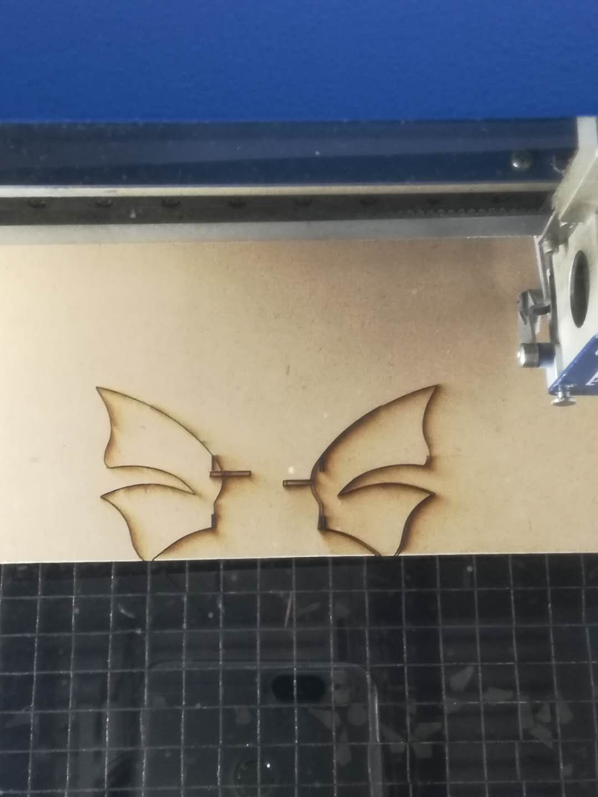
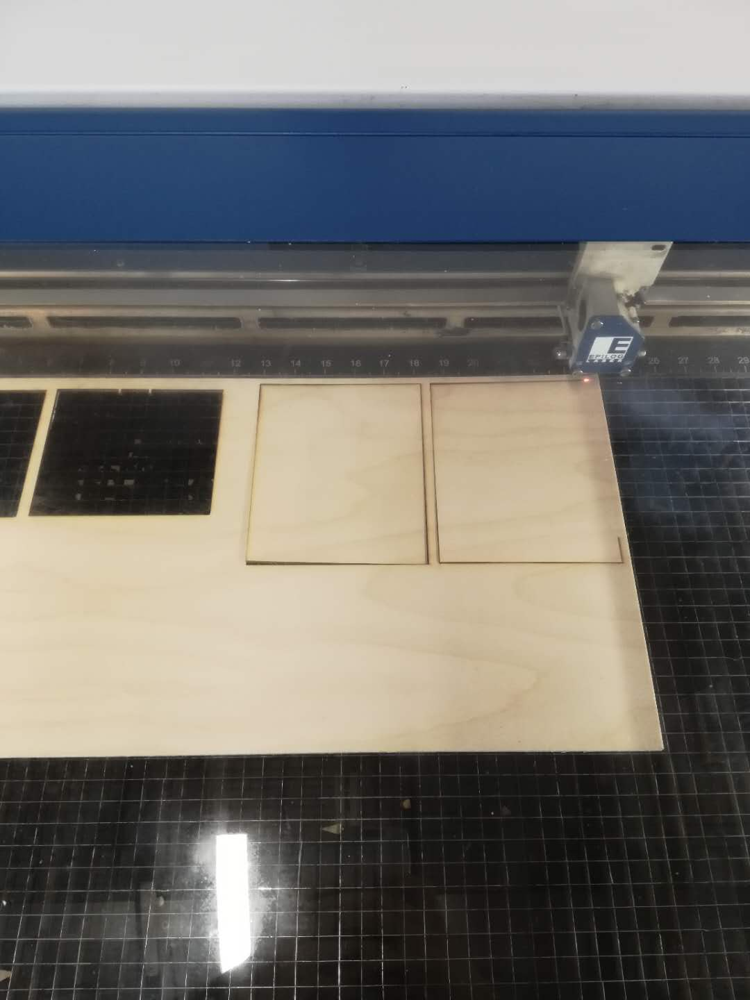

We are at the end of this semester now, so we are required to make our final projects as our exam. After Talk with Mr.Gerber, I
decided to make a butterfly wich movable wings. I was planning to use arduino with servo to serve as the power to pull the wings
of the butterfly. This design is actually really really challenge. I spent over 15 hours in it, but eventually I finished it!
I felt so satisfied.
I used four different processes in my butterfly projects: Arduino, electric, Computer aid design and lasier cut.
Step1:
I first
found a copy right free image of a butterfly on the website, then I imported it into Corel Draw. In Corel Draw I changed the format
of this butterfly image from jpg. to stl. Then I imported this this stl formatted image to Fusion 360. In Fusion 360
I extruded the butterfly，so now I had a 3D butterfly model.
Step2:
After finished all of these, I found out that toothpick might be good axles for my butterfly. Therefore, I measured the
width of toothpick which is exat 2 mm. Then I designed four gaps which are 2 mm wide on the bottom and top of the wings of
the butterfly. I made the size of my butterfly around a reasonable size which is 5 cm and imported the whole
thing to Corel Draw again in order to laser cut it. Then I downloaded this file
in my flashdrive and went to use laser cut to cut my butterfly. I actually cutted my butterfly several times, because
after I laser cutted this butterfly, I found out it was too small, so then I changed the size of my butterfly to 9 cm. Finally
after several failures, I got my perfectly cutted butterfly and colored it

File of the butterfly
Step3:
After finishing coloring the butterfly, I used glue gun to stick the toothpicks into the gaps and I connected two toothpicks
together for each axle. Then I measured the middle part of the butterfly and designed a small component to connect that part
with the steel stick on the servo. Mr.Gerber actually helped me to decide the material for the connection of butterfly
and servo. We finally chose to use steel stick. After the small component, the servo ,and the steel stick were setted up, I
use the electrics to form an arduino. I connect the arduino with servo on it to the computer and programmed it. Finally I got
my arduino which allowed my servo to move in 180 degrees.
Step4:
I then measured the dimension of the arduino and designed a box for my butterfly by Corel Draw,
because although Arduino is good, it is not good looking. For athestics purpose, I used
laser cutter to cut all 6 pieces of woodboard and formed a box to cover arduino. After this process,
I felt I became the master of laser cutter. I become really skilled about how to use laser cutter.
For the top one of the wood board, because I needed to allow the stick of servo to pass it in
order to connect with the butterfly, I first tried to use electric drill to form a hole on it.
After the help with Mike, I finally got a hole on the top woodboard. Then I spent a lot of time
and energy try to put the steel stick through the hole and connected the stick with servo. I finally
got it. However, after I let the servo move, I found out a horrible truth that the hole is
too small which makes the butterfly stucked there. Then, sadly, I have to redo everything again.
This time I used laser cutter to cut a large hole on the woodboard and I tried over five times
to put stick of servo in a right position in order for it to move properly. Finally, my butterfly
moved smoothly with the stick which pulls it down regularly with the force of servo.
